Long-Term Pattern Formation and Maintenance for Battery-Powered Robots
Supplementary material
Known region coverage
Simulation setup
Pattern formation - ARGoS simulations
Pattern a)
 |
| Pattern with highest tree depth (8). Robots are in the line formation. Black node represents the charging station. |
The pattern formation a shown by the figure on the right has 9 positions which robots need to take. Its shape is in a form of a chain, in which each robot has only one successor (with exception to leaf positions). The depth of the tree representing this pattern is 8, meaning, that the furthest robot (one in the leaf position) needs to perform 8 position exchanges in order to reach a charging station. This topology allows for at most three simultaneous position exchanges (since each exchange involves three robots).
Given the previously described parameters, the pattern formation was stable with at most 6 robots, effectively reducing the depth to 5. The formation is considered stable if during the simulation run-time, none of the robots are fully discharged (and doesn't show a tendency to do so).
For each robot, if its successor has a lower state of charge (SoC), they exchange positions. Therefore, in accordance to the proposed algorithm robots continuously compare their SoCs, and if necessary, engage in the position exchange procedure. In this way, robots with the most SoC are pushed toward the edges, while the robots with the least SoC are attracted towards a charging station. To see how this effects the overall continuity, i.e. stability of the pattern itself (number of robots present in the formation), consider the bottom left figure. For pattern formation a it shows that the 40 - 100% of robots are at any given point at the exact position of the established pattern while the rest of them are exchanging positions. This means that mostly 1 to 4 robots are moving, while the rest are staying still in the formation, simulating data processing; operating under assumption that when a robot is joined in the formation, it does some useful work.
The right most figure bellow shows that on average more than 80% robots are in the pattern, meaning that on average only 1 or 2 are not in the pattern nor in a nearby position (a robot can be in a nearby position still performing the given task, however just slightly moved away to make space for its replacement, i.e. its successor traveling down the tree to the charging station). Furthermore, figures bellow show the percentage of robots available for performing a given task, and state of charge throughout the simulation. No robots are fully discharged.
 |
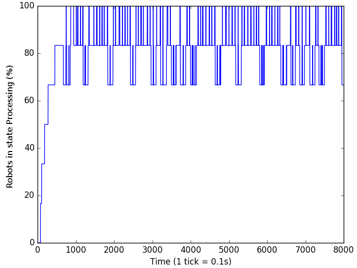 | 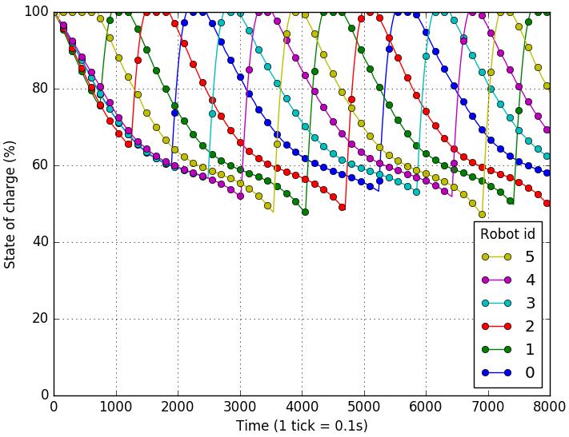 |
| Left part of the figure shows the percentage of robots in the formation a which are holding their position in the pattern during 8000 simulation steps. Right part shows the percentage of robots in the state Joined in robots are able to perform a given task. | State of charge for each robot in the pattern a. The most robots it can support is 6 out of 9. | |
Pattern b)
 |
| Pattern b) |
Pattern b shown on the side figure has the total depth of 3, meaning that robots at leaf positions need 3 position changes to reach the charging station. The topology of the tree representing this formation allows for only two position exchanges at most. If the robot at the root of the tree and its successor are engaged in the position exchange process, robots in both the left and right side of the sub-tree cannot engage in position exchange since their successor is busy. Consequently, this makes this formation the one with the highest average percentage of robots which are at any given moment joined in the formation and performing their task, i.e between 80 - 100%, averaging on 90% of robots.
 |
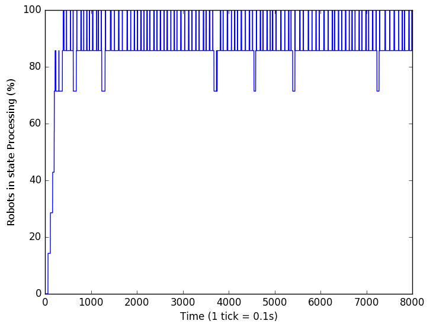 | 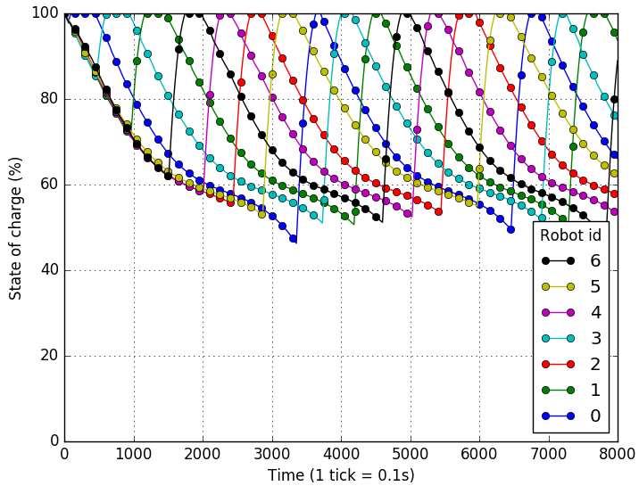 |
| Left part of the figure shows the percentage of robots in the formation b which are holding their position in the pattern during 8000 simulation steps. Right part shows the percentage of robots in the state Joined in robots are able to perform a given task. | State of charge for each robot in the pattern b. At most, it was stable with 7 robots. | |
Pattern c)
 |
| Pattern c) |
Given its depth and number of direct branches from the root, pattern formation c shown on the side figure, is the most interesting one since it has a good representation of properties of all other patterns. It is similar to the pattern formation a, however the charging station is located at the middle of the tree, which splits its depth to 4, meaning that robots at leaf positions need to make at most four position exchanges in order to reach the charging station. Also, since the root has two successors, at any given moment two robots are competing to access the charging station.
As shown in the figures bellow, 60 - 80% of robots are at the exact position of the established pattern while the remaining ones are engaged in position exchange. One can notice that mostly 2 to 4 robots are moving simultaneously while the remaining ones keep still, joined in the formation. Also, the (middle) figure shows that on average 80% robots are joined in the pattern performing a given task. Since this formation was stable with all 9 robots, in absolute terms this means that on average 1 or 2 robots are not in the pattern or at their nearby positions (i.e. are traveling towards their predecessors to exchange positions).
 |
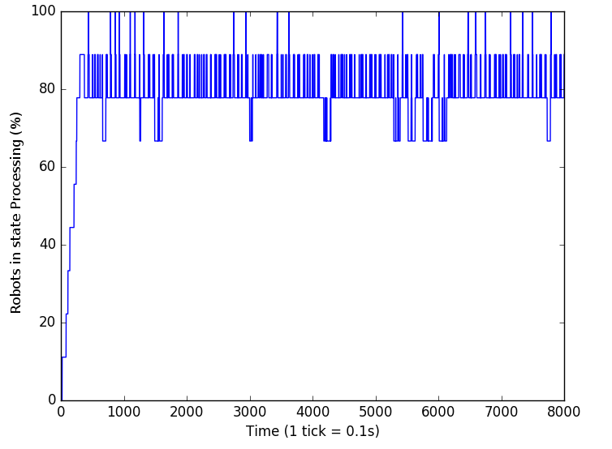 | 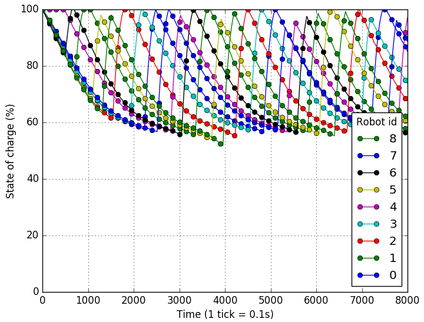 |
| Left part of the figure shows the percentage of robots in the formation c which are holding their position in the pattern during 8000 simulation steps. Right part shows the percentage of robots in the state Joined in robots are able to perform a given task. | State of charge for each robot in the pattern c. | |
Pattern d)
| 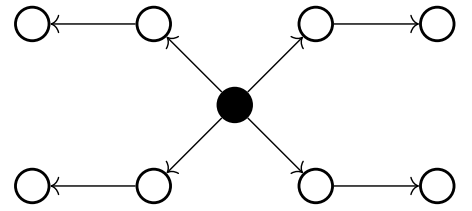 |
| Pattern d) |
The side figure shows the pattern d with the lowest depth and a root with most direct successors. In this pattern four robots are competing to get to the charging station at once, and each robot located in the leaf position needs only two position exchanges to reach the charging station.
At any given moment, this pattern formation allows for four pairs of robots to exchange positions. The consequence of this is shown in the most left figure bellow. The left part shows that between 60 - 100% of robots are joined in the formation, while on average 80% of the robots are performing their task. Given the fact that this formation involved 9 robots, this means that mostly 3 of the robots were not present in the pattern, however only 1 or 2 of these did not perform their task (i.e. were not in their nearby position).
At most, pattern d could support 9 robots as shown in the most right figure bellow. None of the robots fully discharge and SoC does not drop bellow 50%.
 |
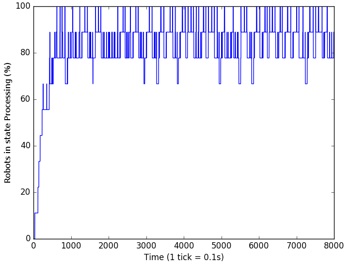 |  |
| Left part of the figure shows the percentage of robots in the formation d which are holding their position in the pattern during 8000 simulation steps. Right part shows the percentage of robots in the state Joined in robots are able to perform a given task. | State of charge for each robot in the pattern d. | |
Unknown region coverage - ARGoS simulations
Simulating a large multi--robot team: 100 robots and 20 charging stations
This subsection shows how previous observations can be used to scale up in order to build a large multi--robot team capable of long term autonomy. Using our approach fully presented in the paper, we are able to successfully deploy a large multi--robot team with 120 robots, of which there are 20 charging stations.
The simulation setup is the same as in previous section, however, since it takes a longer time for a multi--robot team to be deployed and for each robot to go through a recharging cycle, therefore we changed only two parameters: a) increased the battery capacity to 300 mAh and b) increased simulation time to 12000 steps, which corresponds to 20 minutes in real world.
| ARGoS simulation of 100 robots and 20 charging stations. None of the team members get fully discharged in 12000 simulation steps. The video is sped up 6 times. | |
In order to cover an unknown region we use a potential function for the deployment of robots to spread the multi--robot team to the most surface area. Figures bellow, along with videos illustrate a simulated region of 10x10 meters in which we deploy 100 robots with a coverage area of 1 m. The target area to cover is a circular area with a radius of 8 m. The darker circle represents this area, while the smaller circles represent robots with individual cover radii.
It can be noticed that the coverage never reaches 100%, as shown in the most left figure bellow. It shows the coverage percentage of the target area in any given moment of the simulation with a sampling rate of 0.1 Hz. Around step 100 the deployment is complete, and then some of the robots proceed to recharge. The highest coverage is 98.05%, the lowest 86.87% and on average it is 91.35%.
| 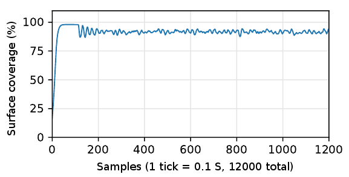 | 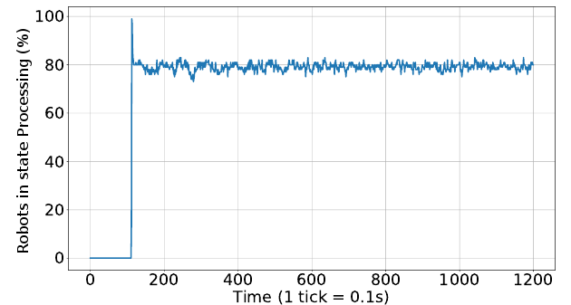 | 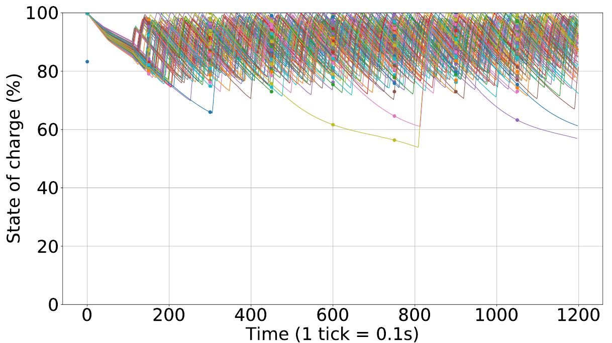 |
| Left figure shows the surface coverage of an area with 8 m radius (shown in a figure below). The right figure shows the percentage of performing useful work (ones not exchanging positions) | State of charge of all robots during the simulation. None of the robots get fully discharged | |
 |
 |
| Robots each covering area of one meter squared, while the target area to cover is represented by a blue circle. | Generated balanced forest used for recharging. |
Unknown region coverage - ARGoS simulations, Scaling comparison
Scaling our approach, comparison between warms of various sizes
Figures bellow show how our approach scales for unknown region coverage with respect to: a) tree generation, b) covered surface, c) state of charge and d) available robots for performing useful work.
| Generated tree: | ||
|
From the standpoint of generated trees, algorithm scales well and produces balanced trees. With 25 robots, the smallest tree only had three members, while for the largest trees hat 8 members. Furthermore, none of the generated trees have a depth larger than 2, which is one of the most important points of the algorithm, as stated in discussion related for the known region coverage. | ||
 |
 |
 |
| Generated forest for 25 robots, 7 charging stations | Generated forest for 50 robots, 10 charging stations | Generated forest for 70 robots, 15 charging stations |
| Area coverage: | ||
|
Depending on the number of robots, the surface to cover had a radius of 4.5 m, 6 m and 7.5 m respectfully for 25, 50 and 75 robots. Figures bellow show the state of area coverage while the multi--robot team is fully deployed, just before generating a forest. | ||
 |
 |
 |
| Area covered by 25 robots, radius of 4.5 m | Area covered by 50 robots, radius of 6 m | Area covered by 75 robots, radius of 7.5 m |
| Percentage of covered area: | ||
|
One can notice that the least area coverage is made with 25 robots. Although the area surface is reduced, still it is to large for 25 robots thus averaging with only 77.54% coverage. Furthermore, regarding to oscillations in coverage, the multi--robot team with 75 robots was the most stable one, because in relative terms the smaller amount of robots can be charged at once. | ||
| 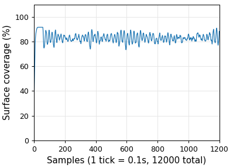 |  |
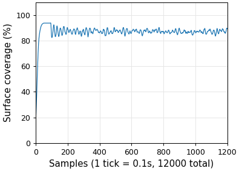 |
| Percentage of covered area with 25 robots (min: 73.34%, max: 91.56%, avg: 82.92%) | Percentage of covered area with 50 robots (min: 80.01%, max: 95.34%, avg: 88.27%) | Percentage of covered area with 75 robots (min: 62.38%, max: 92.32%, avg: 87.08%) |
| State of charge: | ||
|
In none of the simulations does any of the robots get discharged, however, one can notice that with less robots the average minimal charge of each robot never drops below 75%, while in the case of 50 and 75 robots this was never bellow 60% (except for one robot which was about to get recharged, before simulation ended). | ||
 |
 |
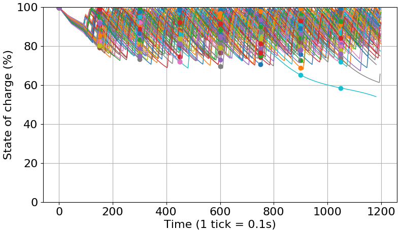 |
| State of charge for a team with 25 members. | State of charge for a team with 50 members. | State of charge for a team with 75 members. |
| Robots available for performing useful work: | ||
|
Number of robots available for useful work (i.e. in state Joined) also differs by the number of team members. With 25 robots it was the lowest, while for the team of 50 and 75 robots it was similar. This is due to the fact that with a smaller team of 25 robots, the average size of the tree was smaller thus allowing robots to go and recharge more frequently (which is also evident in the associated state of charge figure). | ||
 |
 |
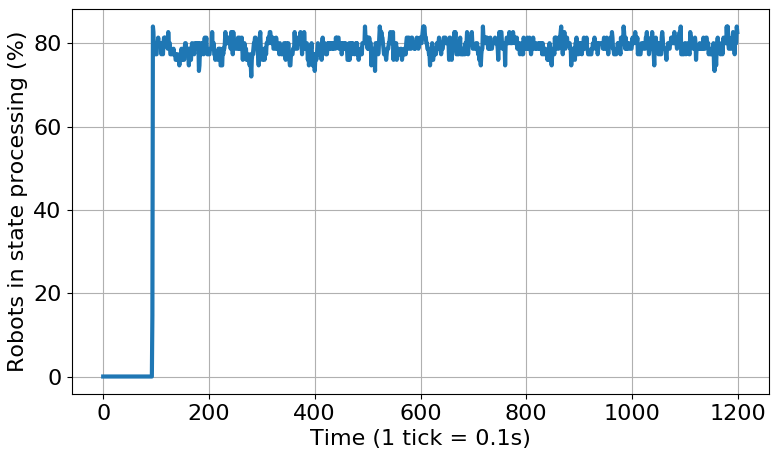 |
| Percentage out of 25 robots available for work (min: 56.00%, max: 80.00%, avg: 67.58%) | Percentage out of 50 robots available for work (min: 70.00%, max: 86.00%, avg: 79.15%) | Percentage out of 75 robots available for work (min: 73.33%, max: 84.00%, avg: 79.39%) |
Real world experiments using Khepera IV
Known region coverage: 1 charging station, 5 robots, star formation
The video bellow shows the experiment of covering a known region with five robots and one charging station. The given pattern is a star formation. Initially, robots are in applying for a label within the recharging tree. The default behavior of a robot without the label is moving around the central point, i.e. the charging station. Once a charging station joins the formation, the first robot is applies for a label, and gets approved. After this, the next one applies, and the process continues until all robots have their labels. Once this is complete, the recharging process starts. The recharging itself is simulated with a fixed amount of time, demonstrating a proof of concept.
| Star formation with 5 robots and 1 charging station. | |
The current design of Khepera IV which is used in this experiment uses a LiPo battery which allows for five hours of autonomy and requires about the same time to fully recharge. In order make experiments more efficient and less time consuming, we simulate battery discharge of 6% per minute by software allowing for autonomy of 1000 S (16.6 minutes) making it 18 times faster than reality. When a robot docks to the charging station and we have a solid contact, we simulate a fast battery replacement taking 1.5 S, which translates to roughly half a minute in the real time.
| 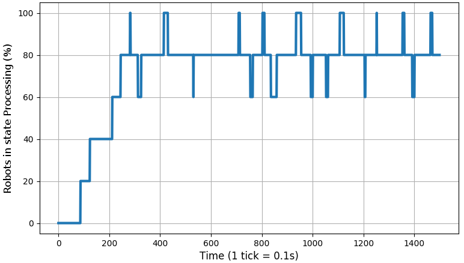 |  |
| Percentage of robots in the state Joined. | Simulated state of charge for each Khepera used in the experiment. |
Unknown region coverage: 1 charging station, 5 robots
The video bellow shows the experiment of covering an unknown region with five robots and one charging station. Robots are initially expanding using the Lennard-Jones potential, while the charging station holds its position. Once the area is covered, our algorithms generate a tree and calculate the best position for a charging station (with respect to tree depth). Then, the charging station moves to this position and the recharging process starts. The robot which initially held the position which is now taken by a charging station, moves to a position of a robot next in line for recharging.
| Unknown region coverage with 5 robots and 1 charging station. | |
For this experiment we slowed down the simulated battery discharge to 2% per minute, while the recharging time remained the same. This difference is visible in the state of charge figure, and when compared to the previous one (known region coverage), one can notice that the levels do not drop bellow 80%. This becomes even more interesting, when compared to the next experiment with two charging stations, where the parameters are the same but the state of charge never drops bellow 85%, since the charging stations have less load.
The figures bellow show the covered area when the multi--robot team is fully deployed (i.e. just before the recharging process starts), along with the state of charge.
| 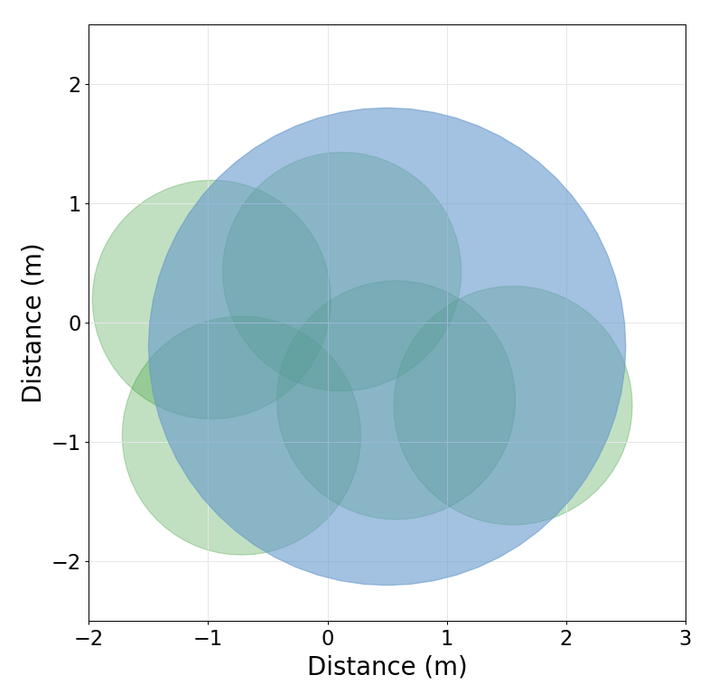 |  |
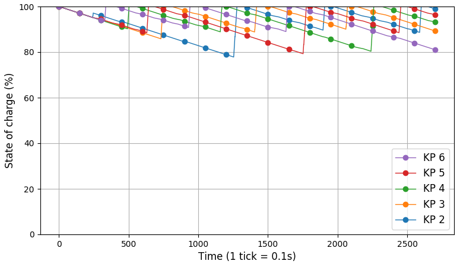 |
| Left figure shows the area covered while the multi--robot team is fully deployed, while the middle figure shows area coverage percentage throughout the experiment. On average the coverage is 73.87% (min: 63.42%, max: 86.02%). | Simulated state of charge for each robot (only one charging station). | |
Unknown region coverage: 2 charging stations, 6 robots
The video bellow shows the experiment of covering an unknown region with five robots and two charging stations. Similarly as in the previous experiment, robots are using the Lennard-Jones potential to cover the region as much as possible. Charging stations are holding their position during this state. After robots expanded as much as possible, the forest is generated using our algorithms, and since there are two charging stations, forest consists of two trees. Then, for each tree, the best position for a charging station is calculated after which charging stations proceed to take their positions using only local positioning and neighbor communication to navigate. After this, for each tree the recharging process starts independently and continuous until the end of the experiment.
| Unknown region coverage 5 robots and 2 charging stations. | |
Although these can be considered optimistic, the state of charge figure bellow shows that the battery levels are always above 80% of charge, leaving plenty of room for much more conservative charging and discharging time assumptions. Furthermore, in this setup, there are only three robots per a single charging station which makes for much more frequent recharging than in the previous case (with five robots per a single charging station).
| 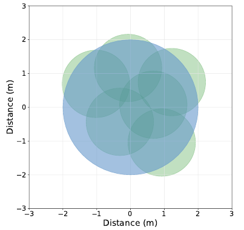 | 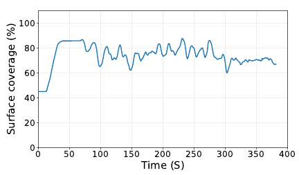 |  |
| Left figure shows the area covered while the multi--robot team is fully deployed, while the middle figure shows area coverage percentage throughout the experiment. On average the coverage is 74.20% (min: 60.17.42%, max: 87.96%). | Simulated state of charge for each robot (two charging stations, three robots per each). | |